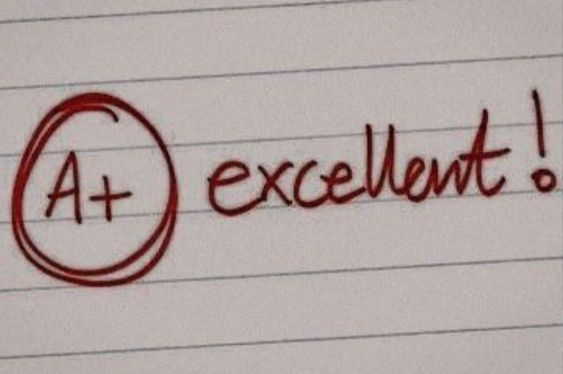

210 de Julho de 2023
Jornada da minha introdução ao mundo da programação

Sempre fui a aluna com facilidade nas matérias, isso pode paracer
ótimo e realmente era, mas resultou em não se preocupar muito com
"estudar" pois era tudo mais facil.
Na Rocketseat, tive acompanhamento ideal para aprender a estudar, foi
essencial para meu começo.